A skating tour on a frozen canal past eleven villages in the Guhpolder: collect all eleven stamps.
Een schaatstocht over een bevroren kanaal langs elf dorpjes in de Guhpolder: haal alle elf stempels.
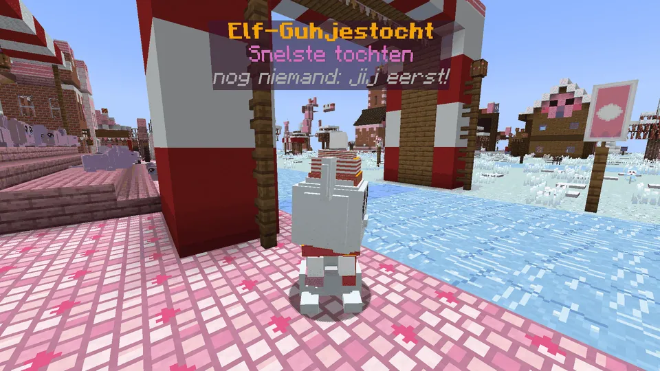
It giet oan!
- Talk to Schaatsmeester Guhglij in Guhwarden: he lends you guh-schaatsen (held in your hand, like the golf club: +50% speed on ice, you lean and sway, the blades hiss) and a stempelkaart. 3 - 2 - 1, the whistle, and off you go.Praat met Schaatsmeester Guhglij in Guhwarden: hij leent je guh-schaatsen (in je hand, zoals de golfclub: +50% snelheid op ijs, je leunt en zwiert, de ijzers sissen) en een stempelkaart. 3 - 2 - 1, het fluitje, en gaan.
- In every village a Stempelguh (with his own hat or scarf) holds a stamp: right-click him, plof, a stamp! The order is fixed: from Snuh to Dokguh, and Guhwarden last (that's the finish). A wrong order doesn't count. The whole village cheers at every stamp.In elk dorp heeft een Stempelguh (met een eigen hoedje of sjaal) een stempel in zijn hand: rechtsklik hem, plof, een stempel! De volgorde ligt vast: van Snuh tot Dokguh, en Guhwarden als laatste (dat is de finish). Een verkeerde volgorde telt niet. Bij elke stempel juicht het hele dorp.
- Your split time per village shows green or red against your best. At the finish: your time on the board elfguhjestocht, fireworks (only sparkles, never real rockets) and everyone cheers VAHOEG!Je tussentijd per dorp is groen of rood tegen je beste. Bij de finish: je tijd op het bord elfguhjestocht, vuurwerk (alleen fonkels, nooit echte vuurpijlen) en iedereen roept VAHOEG!
- At the stalls you can grab a cup of warme chocovet or snert for a short speed boost. At night lampions and vuurkorven light up along the canal.Bij de kraampjes pak je een kopje warme chocovet of snert voor een korte zet. 's Nachts gaan lampionnen en vuurkorven aan langs het kanaal.
- Friends can skate at the same time, each with their own time. A tamed Pinguh slides along behind you. Just want to skate? Vrij schaatsen: no clock, no coins.Vriendjes kunnen tegelijk schaatsen, ieder met een eigen tijd. Een tamme Pinguh glijdt achter je aan. Gewoon lekker schaatsen? Vrij schaatsen: geen klok, geen munten.
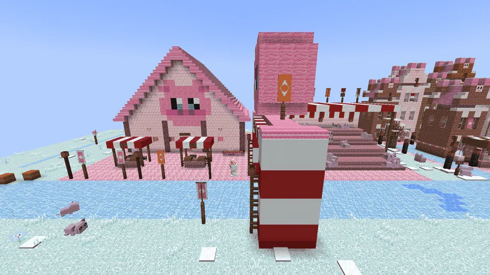
Guhwardenstart and finishstart en finish
De Bonkevads with koek-en-zopie and erwtensoep, a grandstand, the start arch with a guh face, and Schaatsmeester Guhglij.De Bonkevads met koek-en-zopie en erwtensoep, een tribune, de startboog met een guhkop, en Schaatsmeester Guhglij.
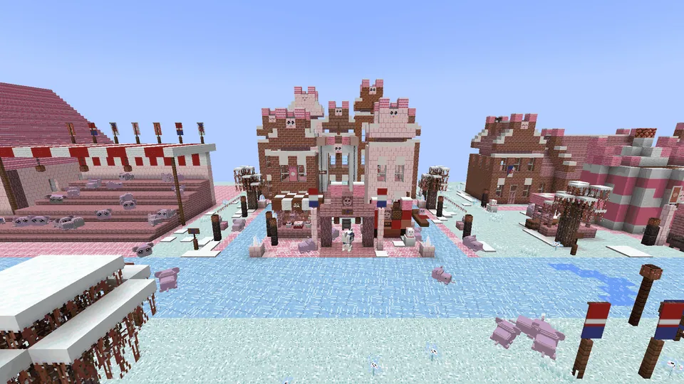
Snuhvillage 2dorp 2
Grachtenpandjes with guh gables and a drawbridge you skate under.Grachtenpandjes met guhgevels en een ophaalbrug waar je onderdoor schaatst.
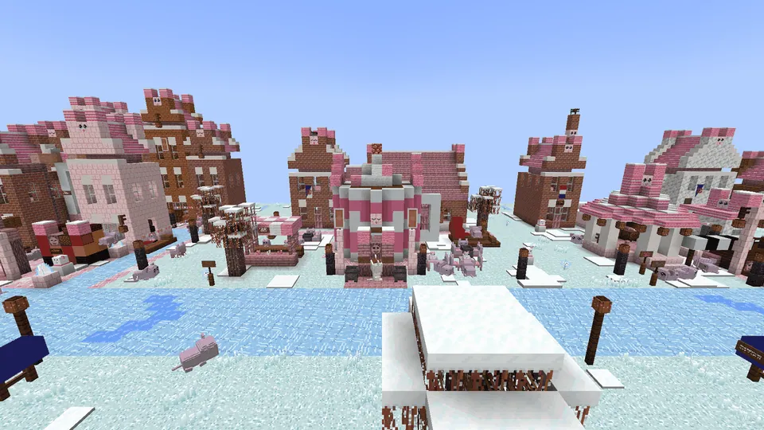
IJlguhvillage 3dorp 3
A giant mug as a kiosk: warme chocovet, a vuurkorf and marshmallow knabbels.Een reuzenmok als kiosk: warme chocovet, een vuurkorf en marshmallowknabbels.
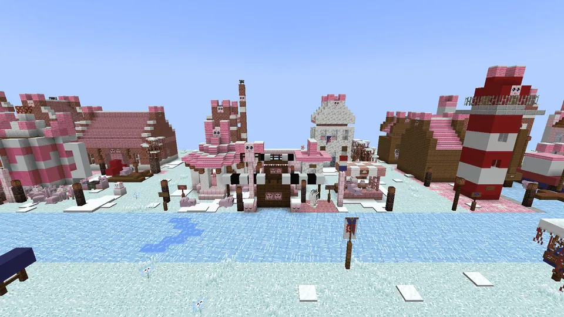
Knabbelslotenvillage 4dorp 4
A little lock and the guh band De Vadse Toeters.Een sluisje en het guhbandje De Vadse Toeters.
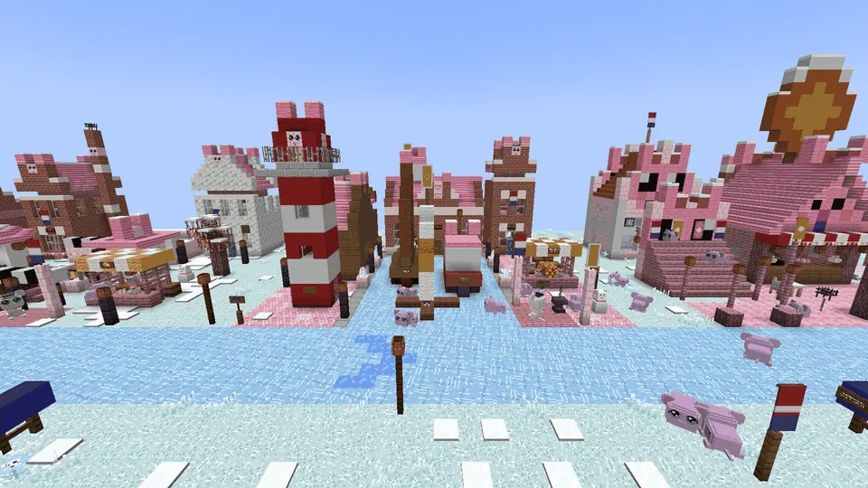
Vadsvorenvillage 5dorp 5
A harbour with a frozen-in botter, an ijszeiler and a lighthouse.Een haventje met een ingevroren botter, een ijszeiler en een vuurtoren.
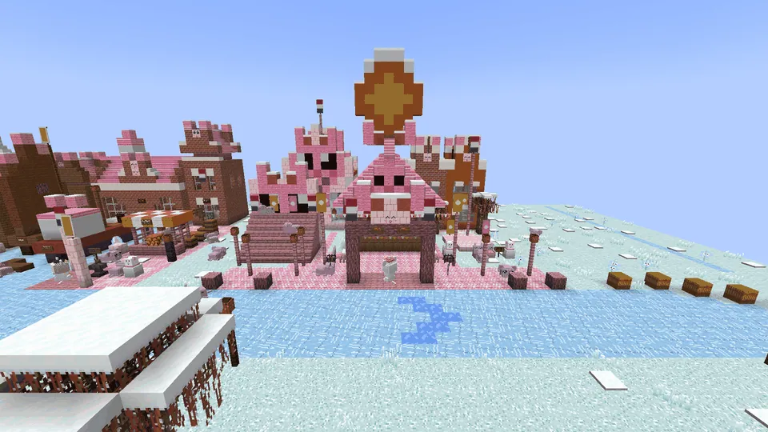
Guhdeloopenvillage 6dorp 6
A raadhuis, a poffertjes stall and flag-waving guhs.Een raadhuis, een poffertjeskraam en vlaggenzwaaiende guhs.
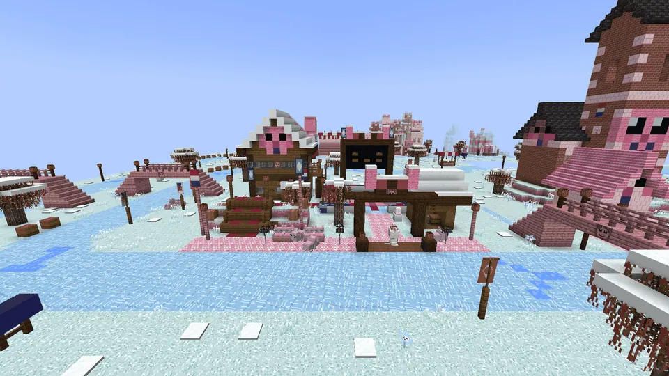
Vadskumvillage 7dorp 7
The klunplek: a stretch over land across a klunbrugje, and ice-hockey guhtjes.De klunplek: een stukje over land via een klunbrugje, en ijshockeyende guhtjes.
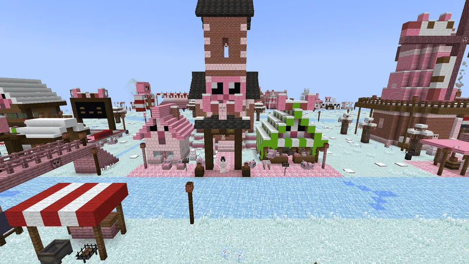
Knabbelswardvillage 8dorp 8
A church on a terp with a guh-faced tower, and a snert tent.Een kerkje op een terp met een guhkop-toren, en een snerttent.
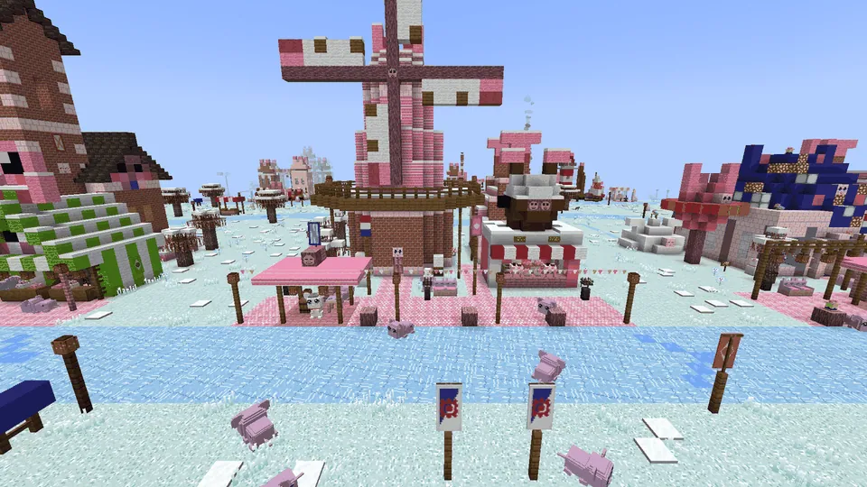
Guhlingenvillage 9dorp 9
The big guh windmill De Vahoege Wiek and an oliebollen stall.De grote guhmolen De Vahoege Wiek en een oliebollenkraam.
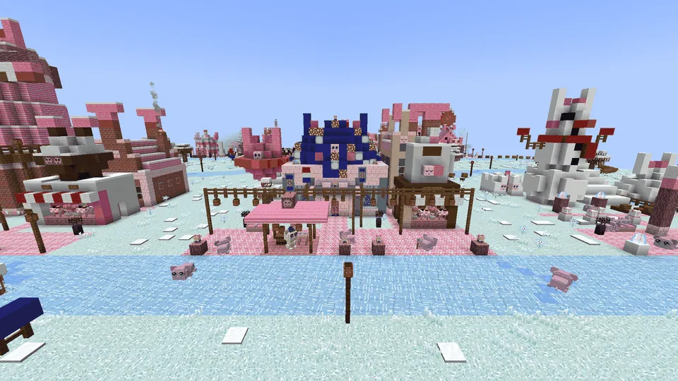
Franeguhvillage 10dorp 10
A little star dome, Het Guhsterrenhuis, with lampions.Een sterrenkoepeltje, Het Guhsterrenhuis, met lampionnen.
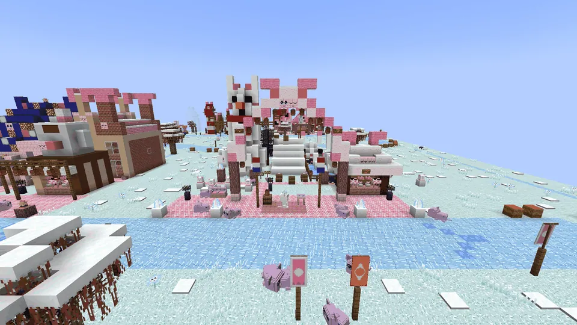
Dokguhvillage 11dorp 11
Sneeuwbert the snowman-guh, sleds, a lampion arch and a Pinguh colony.Sneeuwbert de sneeuwpopguh, sleetjes, een lampionnenboog en een Pinguhkolonie.
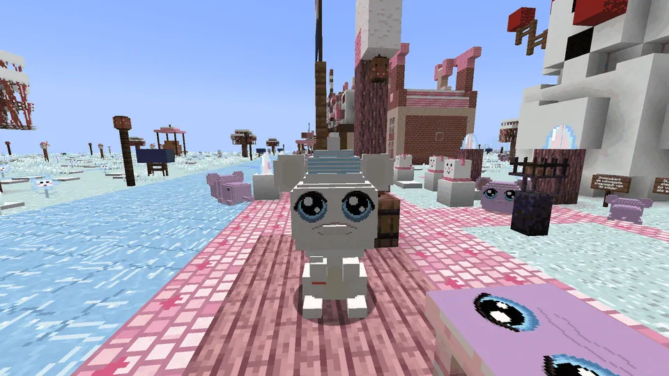
The StempelguhsDe Stempelguhs
Every village has its own Stempelguh, "Stempelguh van ...". Plof!
Elk dorp heeft een eigen Stempelguh, "Stempelguh van ...". Plof!
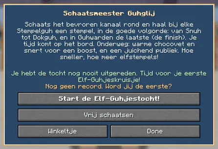
RewardsBeloningen
| TimeTijd | ElfstempelsElfstempels |
|---|---|
| any finishelke finish | 12 |
| under 6:00onder 6:00 | +2 |
| under 5:00onder 5:00 | +2 |
| under 4:15onder 4:15 | +2 |
| under 3:40onder 3:40 | +2 ★ |
| the first finishde eerste finish | +5 |
(it used to be 5, +1 per mark): a tour is a long ride, so it pays more..
(vroeger 5, +1 per grens): een tocht is een lange rit, dus hij betaalt meer..
The first time you finish you also get the Elf-Guhjeskruisje, a little medal block for at home, and 5 extra elfstempels. A good tour takes about 3½ to 5 minutes. No levels here.
De eerste keer dat je hem uitrijdt krijg je ook het Elf-Guhjeskruisje, een medailleblokje voor thuis, en 5 elfstempels extra. Een goede tocht duurt zo'n 3½ tot 5 minuten. Hier zijn geen niveaus.
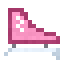
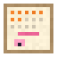
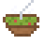
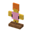
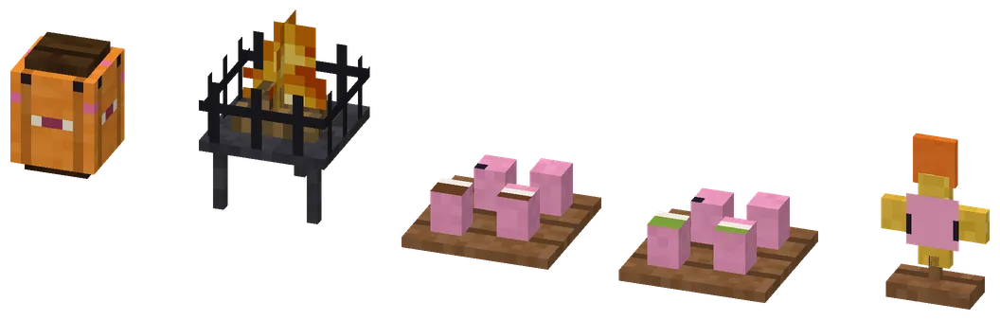
Lights, stalls and the kruisjeLichtjes, kraampjes en het kruisje
The night lampion and the vuurkorf (both light up at night, and are harmless), trays of warm cups (chocovet and snert) and the Elf-Guhjeskruisje.
De nachtlampion en de vuurkorf (allebei aan in het donker, en ongevaarlijk), dienbladen met warme kopjes (chocovet en snert) en het Elf-Guhjeskruisje.
More elfstempels on the Elf-GuhjestochtMeer elfstempels op de Elf-Guhjestocht
A tour is a long ride, so it pays more now (the whole shop costs 26):
Een tocht is een lange rit, dus hij betaalt nu meer (de hele winkel kost 26):
| TimeTijd | ElfstempelsElfstempels | WasWas |
|---|---|---|
| any finishelke finish | 12 | 5 |
| under 6:00onder 6:00 | +2 | +1 |
| under 5:00onder 5:00 | +2 | +1 |
| under 4:15onder 4:15 | +2 | +1 |
| under 3:40onder 3:40 | +2 | +1 |
| the very first finishde allereerste finish | +5 and the Elf-Guhjeskruisjeen het Elf-Guhjeskruisje | – |
So a fast tour gives up to 20, and your first one up to 25.
Een snelle tocht geeft dus tot 20, en je eerste tot 25.
Prizes: clothesPrijzen: kleding
 Schaatsmuts met pompom 4 elfstempels
Schaatsmuts met pompom 4 elfstempels Wollen schaatstruitje 10 elfstempels
Wollen schaatstruitje 10 elfstempels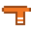
Oranje schaatssjaal 6 elfstempels Pluizige oorwarmers 6 elfstempels
Pluizige oorwarmers 6 elfstempels
Highscores in the GuhdexHighscores in de Guhdex
- Alle 11 stempels
See alsoZie ook
 De Elf-GuhjestochtStructuresBouwwerken
De Elf-GuhjestochtStructuresBouwwerken Schaatsmeester GuhglijCharactersPersonages
Schaatsmeester GuhglijCharactersPersonages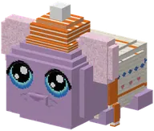
Clothing set: De Elf-GuhjestochtKledingset: De Elf-GuhjestochtClothesKleding